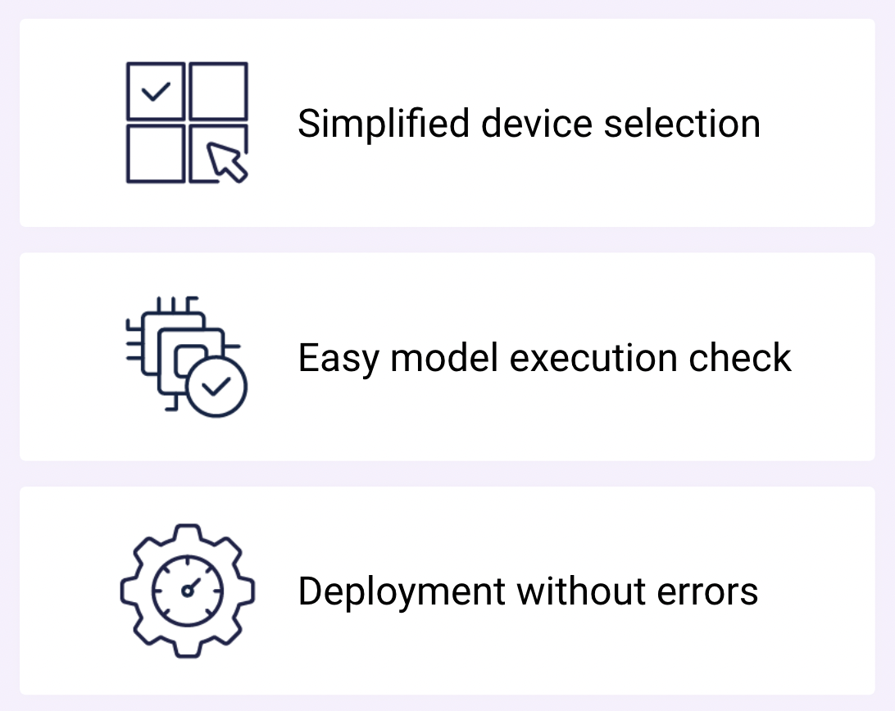
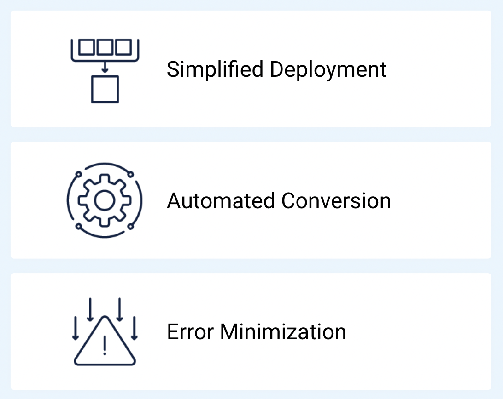

LaunchX
LaunchX는 장치에 AI 모델을 배포하기 위한 프레임워크 변환 및 벤치마킹 핵심 작업을 빠르고 쉽게 수행할 수 있는 웹 애플리케이션입니다.이 애플리케이션을 통해 AI 개발자, 연구자, 심지어 비전문가도 직관적으로 최고의 변환 도구와 벤치마킹 기능을 사용할 수 있습니다.만약 Python 사용자라면, Python 패키지로도 동일한 기능에 접근할 수 있습니다.
Models
NetsPresso를 통해 최적화된 모델을 제공합니다. 변환 후 바로 이 AI 모델들을 활용할 수 있습니다.
다양한 컴퓨터 비전 작업 모델을 무료로 활용하세요.
변환된 모델을 다운로드할 수 있습니다.
당신의 프로젝트 환경에 맞춘 세밀하게 조정된 모델을 맞춤형으로 요청할 수 있습니다.
Convert
프레임워크 변환 과정을 간단하게 만듭니다.

쉽고 효율적인 모델 변환입니다.
자동 변환으로 시행착오를 없앱니다.
Quickly set up the deployment of models on target devices. See supported frameworks
Benchmark
AI 모델에 적합한 장치를 쉽게 찾으세요.
벤치마킹을 통해 최적의 장치를 식별하세요.
타겟 장치와 모델 호환성을 확인하세요.
Evaluate real-device performance without acquiring or setting up the device. View compatible devices.
원하시는 장치를 선택하세요
새로운 장치가 출시될 때마다 장치 제조사와의 협력을 통해 AI 모델을 최적화하기 위해 지속적으로 연구 및 개발을 진행하고 있습니다.특정 장치의 벤치마킹을 원하시면 요청해주세요.
여러분의 의견을 듣고 있습니다.
어려움이나 추가 크레딧이 필요하시면 언제든지 저희에게 연락 주세요!
👨💻 NetsPresso Support Center: netspresso@nota.ai
Models
NetsPresso를 통해 최적화된 모델을 제공합니다. 변환 후 바로 이 AI 모델들을 활용할 수 있습니다.
다양한 컴퓨터 비전 작업 모델을 무료로 활용하세요.
변환된 모델을 다운로드할 수 있습니다.
당신의 프로젝트 환경에 맞춘 세밀하게 조정된 모델을 맞춤형으로 요청할 수 있습니다.
Convert
프레임워크 변환 과정을 간단하게 만듭니다.
쉽고 효율적인 모델 변환입니다.
자동 변환으로 시행착오를 없앱니다.
Quickly set up the deployment of models on target devices.